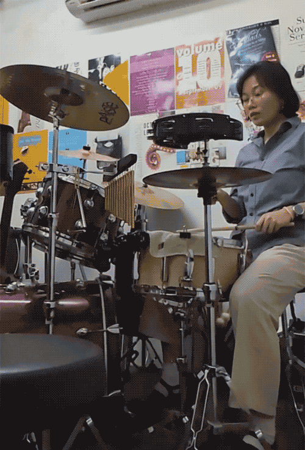
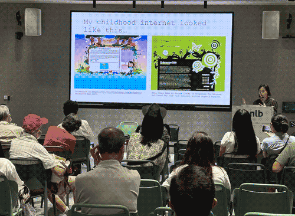

But I guess it's important for me to first say that I'm proud of myself — and I truly am. It was nice to be reminded of the ways in which life can be beautiful, where I actively anticipate days instead of dreading them. This year felt a bit like lingering on a near-empty train platform, listening to the quiet chant of the winds, my heart light from the setting sun as I wait for the next train that would only be in an hour's time. Unhurried and at ease.
An image comes to mind: elastic stretched to the point it loses all tension.
For a considerable amount of time (maybe 2 years or so), I thought that perhaps I hated science, actually. Like my brain had wilted, and that problem solving was a tiresome burden I no longer wanted to entertain. But how could I dare admit that? It would only colour me with shame and grief for the loss of something I held so dearly to me, that had, in a way, defined a part of me in my eyes. But because I lingered, I could see clearly that none of that was reality; I'd merely worn that part of myself thin through repetition. Sunk myself so deep in the murky ponds that, without sunlight, I forgot how to reach out and grow. I simply had to apply myself in a different way. Science was still cool to me when I stepped back from the depths of my work in it. I still wanted to code, to problem solve, to tinker. A relief.
In 2024, I often said, "I feel like I don't have the personality to be an academic." Thinking that I just didn't have the same passion or dedication to a particular niche that other successful scientists seemed to embody. I didn't want to burn nights laboriously poring over proofs, I didn't want to contend with the wall of failure that seemed to greet me at every turn. Although I didn't phrase it as such, at the back of my mind, it felt like a shortcoming. An insufficiency of character, or of grit and resilience.
Worst still, I thought perhaps that I was just plain dumb. That I could not seem to push through my PhD because I just wasn't technically capable enough, and that no matter how hard I tried, I couldn't seem to break beyond that. In a way, the PhD pointed out all of my flaws, and I unwittingly internalized it as a reflection of my value as a person.
In 2025, I found the words to understand myself.
In 2025, I realized that I didn't want to do those things, but only because my heart desired breadth, not depth. I realized that I best thrived in chasing my curiosities that spanned multidisciplinary interests, not a niche area that a PhD tended to shuttle one towards.
This year, I found the word "generalist", and I nurtured those tendencies in me. I felt, this year, more than ever, that I let my curiosity guide me completely in the ways that it wanted.
I gave myself grace — and took a break.
I told everyone I took a break from my PhD this year to do an internship because I wanted to see what options there were for me after I graduate, but I suppose what I was really seeking was refuge. A pause button. It was one of the best things I could have done for myself.
It was here, in a new context where I had to learn a whole new job, that I let myself try so many new things. Yes, I learnt whatever skills I needed for the job, like acquisitions and copyediting. But I also learnt the bass guitar, the keyboard, and even a little bit of drums! Never would I have thought that I'd somehow pick up music this year and play in an office band.

Learning the drums.
I let myself ask questions, make requests. I was on the editorial team but I asked to follow a book launch and a conference event to see what the marketing department does. I got to shadow a few typesetters to learn how they worked. I made conversations where I could in the pantry, seeking insight from whoever I could.
Perhaps to best put it: I tried to make the most out of the internship.
I feel like had I been in a different state of mind — maybe as an undergraduate, with no direction — I wouldn't have approached the internship the way I did. But because it felt like my ticket to a different world, a momentary respite, I didn't want it to go to waste. And I was lucky that I had bosses who allowed that curiosity.
But more importantly, they showed me grace, even when I made mistakes. Like a parent gently coaxing a child, they showed me that I can be kind and forgive myself.
And I said yes to new adventures.
I also hosted HTML Day in 2025, which was really exciting. I remember seeing the email that HTML Day was around the corner, but I saw that there hadn't been a previous event in Singapore before. For a moment I thought: that's a shame, I really wanted to attend an event. Then I thought: why not just host one myself?
So that's precisely what I did.
Teaching my friends how to code in HTML at HTML Day 2025. :)
It's crazy to think sometimes of how one thing can lead to another. In a serendipitous weaving of fate, past and future, me hosting HTML day ended up leading to an invitation to host a workshop on the handmade web / HTML & CSS for the National Library in Singapore at the start of 2026. (I still can't believe that!) Alongside that, I was also invited to speak on my very first panel — something that I was so deathly nervous and unsure about, but said yes anyway!

Giving a short walkthrough and introduction to the handmade web for the panel in 2026!
In the same thematic ballpark, something else I did at the end of 2025 was to reach out to more people. The idea of networking always seemed a little scary, but I realized that the worst thing that could happen was to have nothing come out of it. And much like how HTML Day led to other things, so too can simply reaching out.
I also tried my hand at gardening (trying to grow our own food!) - but I quickly realised that it's not for me! Tending to a garden requires time and effort, which I could not afford amidst everything else. But it was still a fun and rewarding experience that I got to benefit from!
Maybe something small and inconsequential: but I started to get into doing fun, colourful make up too! And I've also been starting to wear them out, even though it's something that was scary at first, but I've been loving it so far. It's a fun way to express myself in ways I didn't think to before.
And finally, something I'm grateful for, I got to travel to 3 different countries this year: Penang, Malaysia; Seoul and Jeju, Korea; and Xi'an, China. Each trip brought with it new experiences and a restful break from everything else.
What will 2026 look like?
I am back to doing my PhD again, and I have another year to go. I suppose 2026 should be the year I really give it my all for my PhD to get it completed in time. But I don't want to take the lessons from 2025 for granted. I'm hoping that I'll look after my mental health in 2026, drawing from the things I've learnt from counselling over the past year.
But most importantly, I want 2026 to be a year of side projects, of exploration, and of experimentation! Many things are still in the works, but I'm very excited for what 2026 will hold for me.